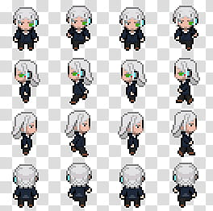
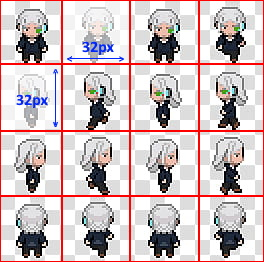
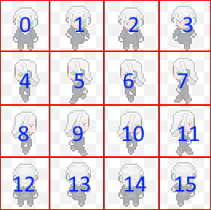
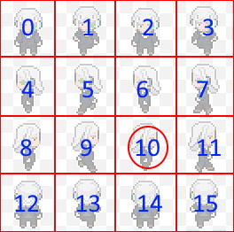
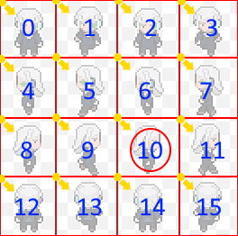

La concaténation et les opérations.
Les opérations
Il n'est pas tout de créer des variables mais il faut pouvoir s'en servir pour y faire des opérations logiques suivant nos besoins. Nous allons donc voir les différents type d'opération qui existe.
Les opérations ne se font qu'avec des nombre. (Integer, Float, Double)
1- Les additions
Il est possible d'additionner deux ou plusieurs variables entre eux. Chaques variables seront séparés par l'opérateur +.
var x = 12;
var y = 14;
var result = x + y + 16;//Ce resultat donnera 42.
//Ou bien:
var result = 12 + 14 + 16;//Ce resultat donnera 42.
//Il est également possible de faire une incrémentation à une variable déjà existant.
result += 2; //Ceci équivaut à faire: result = result + 2;
//Pour la cas ou l'on devrais incrémenter de 1 notre result. Un syntaxe simplié existe:
result++; //C'est comme: result+=1 ou result = result + 1;
2- Les soustractions
Il est possible de soustraire deux ou plusieurs variables entre eux. Chaques variables seront séparés par l'opérateur -.
var x = 27;
var y = 34;
var result = x - y; //Ce resultat donnera un nombre négatif (-7) mais cela restera un entier valide.
//Ou bien:
var result = 27 - 34;
//Il est également possible de faire une décrémentation à une variable déjà existant.
result -= 2; //Ceci équivaut à faire: result = result - 2;
//Pour la cas ou l'on devrais décrémenter de 1 notre result. Un syntaxe simplié existe:
result--; //C'est comme: result-=1 ou result = result - 1;
3- Les multiplications
Il est possible de multiplier deux ou plusieurs variables entre eux. Chaques variables seront séparés par l'opérateur *.
var x = 10;
var y = 35;
var result = x * y;
//Ou bien:
var result = 10 * 35;
//Il est possible de simplifier avec la syntaxe:
result *= 2; //Ceci équivaut à faire: result = result * 2;
//Il ni a pas de result**; car il serait totalement inutile de multiplier par 1 une variable.
4- Les divisions
Il est possible de diviser deux ou plusieurs variables entre eux. Chaques variables seront séparés par l'opérateur /.
var x = 16;
var y = 4;
var result = x / y;
//Ou bien:
var result = 16 / 4;
//Il est possible de simplifier avec la syntaxe:
result /= 2; //Ceci équivaut à faire: result = result / 2;
//Il ni a pas de result//; car il serait totalement inutile de diviser par 1 une variable.
Attention: Si vous faites une division par 0 il ne vous retournera pas un nombre valide mais une valeur de type Infiniti.
5- Les modulos
Il est possible de recupérer le reste d'une division. Chaques variables seront séparés par l'opérateur %.
var x = 30;
var y = 15;
var result = x % y; // Le résultat sera 0. Car 30/15=2 et donc il ne reste rien.
//Ou bien:
var result = 27%4; // Le result sera 3. Car 27/4 = 6 (6 * 4 = 24) et il reste 3 (27 - 24 = 3).
//Il est possible de simplifier avec la syntaxe:
result %= 2; //Ceci équivaut à faire: result = result % 2;
//Il ni a pas de result%%;
Conseil: Le modulo est utile pour pas mal d'algorithme. Notamment pour savoir si un nombre est pair en utilisant le modulo de 2 "x%2", pour faire des systèmes de pagination, pour récupérer une image dans une sprite sheet etc...
- Exemple pour les spites sheet:
Imaginons j'ai une sprite sheet de 16 images réparti en colonne de 4 et en ligne de 4.
On va se dire que chaques sprites font 32 pixels de long et 32 pixels de haut.
Visuellement ça donnerais ça:
Maintenant que l'on connait les dimensions x et y de chaques sprites. Je vais les numérotés. Cela sera bien plus visible pour nous lorsque l'on voudra récupérer l'une des textures.
Comme vous le remarquez, mon premier sprite commence par 0. Car la liste de sprite, en réalité, sera une sorte de tableau à 2 dimensions. Et Comme vu dans le précédent chapitre. Nous avons appris que les index en programmation commencaient par 0. Alors gardons cette logique.
Voila nous avons nos bases. Il nous reste plus qu'à récupérer une texture et je souhaites récupérer les coordonnées de mon sprite qu'en donnant son numéro. Imaginons le numéro 10 qui se trouve à la 3ème ligne et à la 3ème colonne.
Avant de commencé nos calcules il est important de savoir quel point nous devons récupérer avant. Pour les images nous récuperons toujours le point en haut à gauche. (indiqué en jaune)
Un point dans une image correspond à deux coordonées. Le x et le y. Pour notre cas il nous faudra donc determiné la position x et y de notre sprite (la coordonnée qui correspond au point jaune de la sprite numéro 10).
Commençons déjà par poser nos variables que l'on connait déjà:
//Le numéro de notre texture.
var texture = 10;
//La longueur d'une sprite.
var spriteWidth = 32;
//la hauteur d'une sprite.
var spriteHeight = 32;
//Le nombre de colonne de notre image.
var imageColumns = 4;
//Le nombre de ligne de notre image.
var imageRows = 4;
Lançons nous maintenant dans la récupération de la coordonnée x (donc la position de la colonne).
// Pour récupérer le x il nous faudra utiliser le modulo.
var x = texture % imageColumns; // Notre resultat sera 2 (soit la 3ème colonne vu que l'index commence par 0). (10 % 4 = 2 soit 4 * 2 = 8 et il reste 2.)
Maintenant que l'on a un premier resultat il nous faut la débogué pour être sur que le calcule sera toujours correct. Pour cela il nous suffit de regarder pour les autres textures.
// Pour notre première texture (donc la numéro 0) ça donnerai:
var x = 0 % imageColumns; // Le resultat sera 0%4=0 soit la première colonne. On en conclu que c'est correct.
//Testons pour la dernière texture (donc la numéro 15):
var x = 15 % imageColumns; // Le resultat sera 15%4=3 donc la 4ème colonne. Encore une fois on en conclu que c'est correct. (3*4=12 et il restera 3.)
A vous de vérifier ensuite chaque valeur possible. Et vous constaterez que l'on sera toujours entre les colonnes 0 et 3.
Passons maintenant à la coordonnée y. Pour cela rien de compliqué. Il nous suffit de diviser le numéro de notre texture par le nombre de ligne.
var y = texture / imageRows; // Le resultat sera 10 / 4 = 2.5.
// Le probleme maintenant est de reconvertir le float en entier arrondit à l'unité inférieur.
// pour cela il y a plusieurs méthodes mais comme je suis sur un cours de modulo alors nous l'utiliserons.
y -= y%1; // ça correspond à faire: y = y - y%1
//Le y%1 = 2.5%1 = 0.5
//Ensuite y - y%1 = 2.5 - 2.5%1 = 2.5 - 0.5 = 2.
Maintenant que l'on a nos coordonnées x et y. Nous pouvons récupérer correctement notre sprite sur l'image en multipliant nos valeurs par la longueur ou la hauteur.
var x = texture % imageColumns; // Resultat: 2
var y = texture / imageRows; // Resultat: 2.5
y -= y%1; // Resultat: 2
var posX = x * spriteWidth; // Resultat: 2 * 32 = 64
var posY = y * spriteHeight; // Resultat: 2 * 32 = 64
Nous avons désormais les coordonnées de notre texture numéro 10. A vous d'essayer les calcules pour récupérer les autres textures.
La concaténation
Tout d'abord, qu'est-ce que la concaténation ?
La concaténation est le fait de fusionner plusieurs éléments dans une chaine de caractère. Chaques variables sont séparés par un + comme pour l'addition donc à ne pas confondre.
var name = 'Doe';
var lastname = 'John';
var fullName = lastname + ' ' + name; //Resultat: John Doe
Il est également possible de fusionner d'autre éléments entre eux mais attention au placement des éléments lors de la concaténation.
var name = 'Doe';
var lastname = 'John';
var age = 37;
var dateBirthday = 12;
var result = lastname + ' ' + name + ' est né un ' + dateBirthday + ' et à ' + age + ' ans.';
//Resultat: John Doe est né un 12 et à 37 ans.
var result = age + dateBirthday + ' ' + lastname + ' ' + name + '.';
//Resultat: 49 John Doe.
var result = lastname + ' ' + name + ' ' + age + dateBirthday + '.';
//Resultat: John Doe 3712.
Les concaténations par defaut, et comme tout, sont interprétés de gauche à droit. par conséquent s'il croise un nombre en premier alors il ne se dira pas tout de suite que l'on souhaite faire une concaténation. Par conséquent il fera les calcules de tous les nombre qu'il verra avant une chaine de caractère mais une fois dans cette chaine alors il y restera quoi qu'il arrive.
Les ordres de priorité
En mathématiques il y a un ordre de priorité sur les calcules. Comme vous le savez déjà les multiplications et les divisions sont prioritaires.
Cependant il est possible de forcer une priorité à un calcul en utilisant les parenthèses.
var result = 10 + 5 * 2 + 4; //Resultat = 10 + 10 + 4 = 24
var result = (10 + 5) * (2 + 4); //Resultat = 15 * 6 = 90
Cela vaut aussi pour la concaténation
var result = 'John Doe à ' + 12 + 5 + ' pommes.'; // Resultat: John Doe à 125 pommes.
var result = 'John Doe à ' + ( 12 + 5 ) + ' pommes.'; // Resultat: John Doe à 17 pommes.